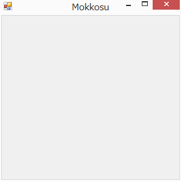

Mokkosuの始め方 (プログラミング初心者向け)
ここではプログラミング未経験者もしくは始めて間もない人を対象として、 Mokkosuでのプログラミングについて説明します。
はじめに
Mokkosuはプログラミング言語です。 技術的には関数型プログラミング言語という分類に属しています。 関数型プログラミングでは、プログラムを関数として記述します。 そして作った関数を組み合わせることでより大きなプログラムを 構築していくことができます。
関数
Mokkosuにおける関数は数学の関数と同じく値を受け取って値を
返すものです。
例えば、以下は引数の値を2倍する関数fを定義した例です。
fun f x = x * 2;
funはこれから関数の定義が始まることを示しています。
fが関数の名前そのあとのx引数です。
=の右側に関数の定義を記述します。
上の関数の定義は数学らしい定義ですが、 Mokkosuでは以下のようにもっと直感的に関数を定義することができます。
fun f = { x -> x * 2 };
これは、fはxをx * 2に対応付ける関数であることを示しています。
関数の合成
次に、作った関数を組み合わせて大きな関数を作ってみましょう。
数学と同じように、関数は合成することができます。
以下の関数gは関数fと関数fを合成したもので、
引数の値を4倍する関数になります。
fun g = f << f;
<<は数学の.と同じ働きをします。
上で説明したようにfは{ x -> x * 2 }と定義
できたことを思い出してください。
これは以下のように書けることを意味しています。
fun g = { x -> x * 2 } << { x -> x * 2 };
つまりいちいち関数にfとかgとか名前を付ける必要はなく、
必要な場所に直接関数を記述できることを意味しています。
再帰的(帰納的)定義
数学で階乗(n!)は以下のように帰納的に定義できます。

Mokkosuではこのような数学的な定義を以下のように直接プログラムに落とし込めます。
fun fact n = {
0 -> 1;
_ -> n * fact (n - 1);
}
他のプログラミング言語(ここではC)での階乗の計算例を見てみましょう。
int fact(int n)
{
int i, r = 1;
for (i = n; i > 0; i--) {
r = r * i;
}
return r;
}
C言語は手続型言語とよばれ、コンピュータのCPUに実行してほしい処理の 手順を記述します。 そのため数学的な定義をどのようにコンピュータに計算させるか、 自分で考えて記述する必要があります。
プログラムを直感的に記述できる関数型プログラミングですが、 すべてのプログラムが関数型で記述しやすいわけではありません。 場合によっては手続的な記述の方がやりやすい場合もあります。 これはどちらが優れているという問題ではなく、 関数型と手続型は適材適所で使い分ける必要があることを意味しています。
Mokoksuは関数型のスタイルでプログラムを記述することを基本としていますが、 手続的な記述が適している場合には、そのようなスタイルでプログラムを 記述することもできるお得なプログラミング言語です。
数学じゃなくてプログラミングがやりたいんだ！
これまで皆さんがなじみ深いであろう数学を題材に話を進めてきましたが、 おそらく皆さんがやりたいと思っていることは、数学ではなく、 ゲームなどの具体的なアプリケーションを作ることだと思います。
プログラミング言語の中には、単にウインドウを表示するだけでも、 面倒な環境構築が必要であったり、また、大量に(場合によっては100行近く) プログラムを書く必要があるものもありますが、 Mokkosuでは簡単にウインドウを表示することができます。
以下はMokkosuでウインドウを表示するプログラムです。
include "Graphics.mok"; # おまじない
scene "main" { _ -> () }; # mainという名前のシーンを定義
show_window "main"; # mainというシーンを表示
実行すると以下のようにウインドウが表示されます。

上のプログラムをよく見てみてください。 2行目で先ほど出てきたその場で関数を定義する構文が使われていることに 気づくはずです。
ここでの関数はマウスがクリックされたとか一定時間が経過したとかいった
イベントが発生した時にどう処理するかを定義したものです。
ここでは、すべての場合に何もしないという処理を記述しています。
この{と}の間に処理を追加していくことで、描画をしたり、
入力を受け取ったりといったプログラムが記述できます。
Mokkosuではイベントを処理する小さな関数を複数組み合わせて、 大きな関数に組み上げていくことができます。 この組み上げていく部分でMokkosuは数学の概念をお借りしています。
次のステップ
プログラミングを始めたものの途中で挫折してしまう原因はいろいろあります。
まずは、プログラミングの環境を構築するのに高度な知識が必要である場合です。 Mokkosuは専用のインストーラを使うことで簡単にプログラミング環境を 構築することが可能になっており、誰でも簡単にプログラミングを 始められるようにしています。
次に、適切なチュートリアルやマニュアルが存在しない場合です。 Mokkosuは日本語のチュートリアルとマニュアルが用意されており、 英語が苦手な方でも難なくプログラミングを始めることが可能です。
さらに、なかなか面白いプログラムが作れるようにならない場合です。 チュートリアルを読んでも、いつまでたっても黒いコンソール画面に 文字を表示するだけのプログラムしか作れず、 次第に飽きてしまい実際に作りたいゲームなどのプログラムを作る段階まで 到達できないということがあります。 Mokkosuではなるべくチュートリアルなどでなるべく実行して面白い、 考えて面白い例をたくさん出すようにして、初学者が途中で飽きてしまわない ように気を付けています。
最後に、適切な指導者がいない場合です。 Mokkosuはまだまだ生まれたばかりの言語で、コミュニティーも小さいため、 くだらないと思えるような質問でも直接開発者に聞くことができます。 いずれコミュニティが大きくなるとそうもいかなくなるのかもしれませんが、 今であれば開発者である私 @lambdataro が直接質問や相談にお答えします。 周りにプログラミングができる人がいないという場合でも安心して 始めることができます。
さて、いよいよMokkosuを学び始めるときです。 最初は以下のチュートリアルを読み始めることから始めましょう。
あなたがMokkosuをそしてプログラミングを好きになって、 面白い作品をたくさん作ってくれることを祈っています。